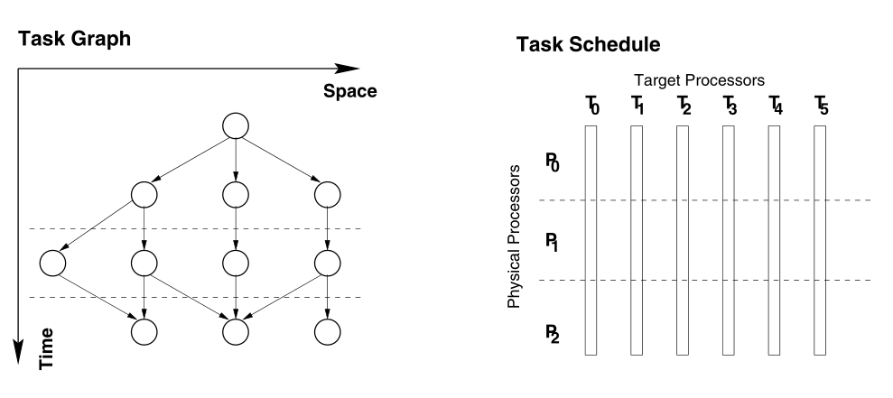

论文简介
《Runtime Parallel Incremental Scheduling of DAGs》
这篇论文主要是提出一种并行增量的DAG调度方法。主要学习一下这篇论文关于动态调度DAG任务方面的内容。因为之前主要用的最多的静态调度方法就是HEFT与CPOP。所以想通过这篇文章，看是否可以将动态思路运用到HEFT或者CPOP中。本篇论文仍然是针对一个DAG图进行调度。并未给出针对多DAG图的相关思路。
论文出发点
本篇论文出发点是从当前DAG调度算法的缺点出发的，主要列举出五点，分别是：
- 因为它们在单处理器机器上运行，所以速度很慢。调度程序可能需要现代工作站数十小时的计算时间来生成1K处理器的调度计划。
- 它们需要很大的内存空间来存储图形，并且此后无法扩展。例如，要将并行程序调度到1K处理器，数百万个节点的图形可能需要数百MB的内存空间。
- 获得的计划的质量在很大程度上依赖于对执行时间的准确估计。没有这些信息，复杂的调度算法就无法提供令人满意的性能。
- 应用程序必须针对不同的问题大小重新编译，因为任务数量和每个任务的估计执行时间随问题大小而变化。
- 它是静态的，因为编译时必须知道DAG中任务的数量和任务之间的依赖关系。因此，它不能应用于动态问题。
论文概述
静态动态调度系统的区别
在静态系统中，DAG由用户程序生成，并在编译时调度。然后将计划的DAG加载到PEs以执行。在运行时调度系统中，DAG不是一次生成的。相反，它是增量生成的。为此，在编译时生成一种紧凑形式的DAG（紧凑DAG或CDAG）。然后在运行时将其增量扩展到DAG。CDAG的大小与程序大小成正比，而DAG的大小与问题大小或矩阵大小成正比。
增量执行模型
在增量执行模型中，每个系统阶段只调度一个子图。每次生成的子图的大小通常受到可用内存空间的限制。系统调度活动与基础计算工作交替进行。它从一个系统阶段开始，在此阶段仅生成和调度DAG的一部分。然后是用户计算阶段，以执行计划任务。PEs将执行，直到大多数任务完成，并转移到下一个系统阶段，以生成和安排DAG的下一部分
策略决定何时从用户计算阶段转移到下一个系统阶段。当任何PE的任务用完时，都会触发该事件。PE通过向所有其他PE广播暂停信号来启动调度活动。PE在接收到暂停信号后，完成当前任务的执行，并从该用户阶段切换到下一个系统阶段。在下一个系统阶段，将生成DAG的另一部分。新生成的任务与旧任务一起调度。这样，可以容忍由于估算不准确而导致的负载不平衡。然后将计划任务发送给PEs，以开始下一个用户阶段。
并行调度算法
由于动态调度算法，需要实时进行调度，所以我们应该找到，调度时间和任务执行时间之和最短的算法。
ALAP(as-laste-as-possible):一个节点的尽可能晚的时间定义为$T_L(n_i) = T_{critical}-level(n_i)$，其中$T_{critical}$是计算节点和边权重的关键路径长度。$level(n_i)$是当前节点到最后节点的最长路径的长度，包括当前节点。
PPE:执行调度算法的PE
TPE:执行任务的目标PE
MCP算法
- 计算每个节点的ALAP时间
- 按递增的ALAP顺序对节点列表进行排序。通过使用后继节点的最小ALAP时间、后继节点的后继时间等来断开连接
- 将列表中的第一个节点调度到允许最早开始时间的PE。从列表中删除节点并重复步骤3，直到列表为空。
作者通过使用MCP算法的非插入版本来进一步降低复杂性。它的复杂度是$O(e+nlogn+np)$，其中e是边的个数，p是PEs的个数，n是图中的节点数。作者的实验表明，对于粗粒度划分，该算法产生的调度长度最多比原始MCP长3%，但其调度时间减少了一到两个数量级。
水平并行MCP算法（HPMCP）
图形分区后，每个PPE使用MCP调度其分区以生成其子调度。在应用MCP时，我们忽略了分区之间的依赖关系，因此每个分区都可以独立调度。如果一个节点的所有父节点都不是本地节点，则该节点在其分区中被视为入口节点。节点按其ALAP优先级的顺序进行调度。每个PPE从其本地时间0开始调度其分区。然后连接相邻的子调度以形成最终调度。如下图所示：

- 对节点进行分区，每个分区分配给一个PPE
- 每个PPE将MCP算法应用于其分区以生成子调度，忽略节点与其远程父节点之间的边缘。将列表中的第一个节点安排到允许最早启动时间的TPE。从列表中删除节点并重复此计划步骤，直到列表为空。
- 连接每对相邻的子表。
系统概览
作者提出的运行时系统主要包括DAG图形生成、调度、节点执行、通信处理和增量执行处理模块。
DAG图形生成
在系统阶段k，新扩展的节点和上阶段未执行的节点集。生成的DAG子图$G_k = {S_k,E_k}$。如果节点$n_i，n_j$都在节点集合$S_k$中那么$e_{i,j}$是$E_k$中的一条边。如果目标节点不在$S_k$中，则来自$S_k$中节点任何传出边缘将成为*future message*。之后子图$G_k$将会被安排到PE中，并在用户阶段k执行。
调度
调度模块将为$S_k$中的每个节点建立从其逻辑ID到其物理ID的映射，该物理ID由目标PE编号和目标PE处的本地ID组成。对于每个在$E_k$中的边$e_{i,j}$，节点$n_i$拥有节点$n_j$的物理ID。因此，当节点i执行完成时，其所有传出消息可以立即定向到其目的地。一旦PPE生成其节点子集，它将使用MCP算法独立地调度这些节点以形成子调度。一个已经被调度的DAG会被加载到TPEs中执行，每个TPE获得一个按执行顺序排序的节点列表（使用本地ID）。
执行
在执行模块中，调度例程负责选择节点并准备执行。在被调度的DAG中，列表中的节点将按顺序执行。分派例程选择列表中的下一个节点并检查其传入消息。当所有传入消息到达后，节点就准备就绪并执行。分派例程为节点的执行分配内存并准备参数。然后调用节点过程。节点执行完成后，通信处理模块处理输出参数。为节点分配的所有内存空间也将被释放。这种消息驱动的宏数据流执行模型可以有效地利用内存。
通信处理
当PE没有准备好执行的节点时，或者在一个节点执行完成和下一个准备好的节点执行开始之间的时间段内，处理消息接收。由于推送方案应用于包含其目的地PE号码以及本地ID的每个传出消息，因此到达的消息可以容易地附加到相应的节点。一旦所有传入消息到达，节点本身就可以执行了。节点执行后，将为每个传出边缘发送一条消息。如果消息只有一个目的地，则将其分类为单播。如果消息具有多个回执，则将其分类为多播。尽管多播消息可以逐个发送到不同的目的地，但它可能需要不可接受的通信时间。通信模块使用多播树进行有效的多播
增量执行处理
接收到暂停消息的每个PE将完成当前节点执行并暂停其当前用户阶段k。在进入系统阶段k+1之前，需要处理尚未执行的剩余节点以及相应的消息，以将其合并到阶段k+1中。在进入阶段k+1之前，必须使节点逻辑ID到其物理ID的当前映射无效，因为物理ID仅对特定阶段有意义。当剩余节点被发送回重新调度时，已经到达这些节点的消息被分离并转换为将来要附加到阻塞队列中的消息，以便延迟这些消息的传递，直到新映射可用于阶段k+1。如果该消息是多播消息，它将被删除，因为多播消息将在以后的每个阶段重新广播。（多播消息是每个阶段都会广播一次，而单播之后发送一次，所以需要进行保存，防止节点未执行，重新分配之后，不能收到消息）